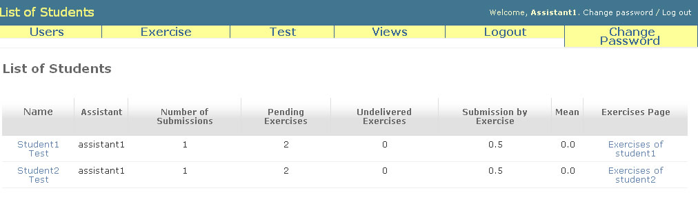
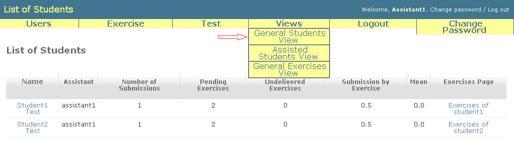
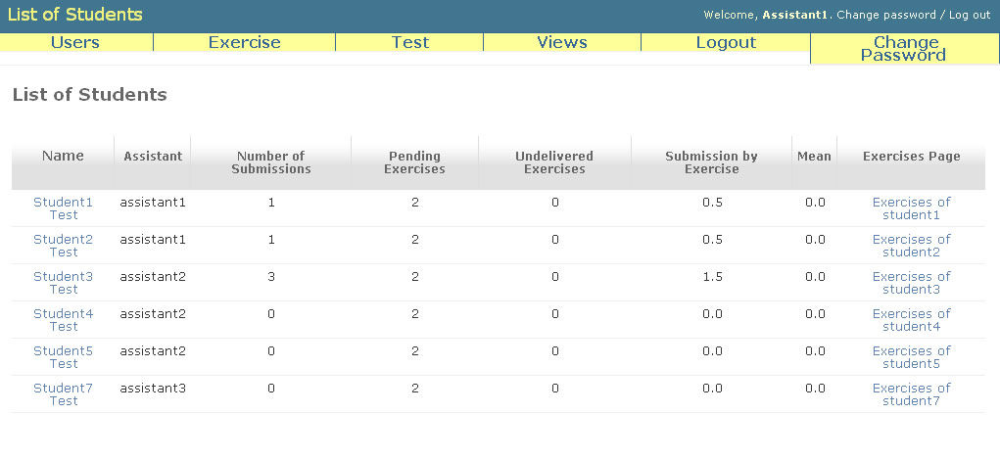

Assistants' Initial Page
When logged in, the assistant will be redirect to initial page. In this page he/she will see the students that are under your responsibility.

But if want, the assistant can see all students accessing the link General Students View at the Views menu option (as bellow).

The list that assistant will see when click at the link General Students View will be equals to the teacher view. If want back to the initial view, the assistant must clink at Assisted Students View, too in Views menu option.
